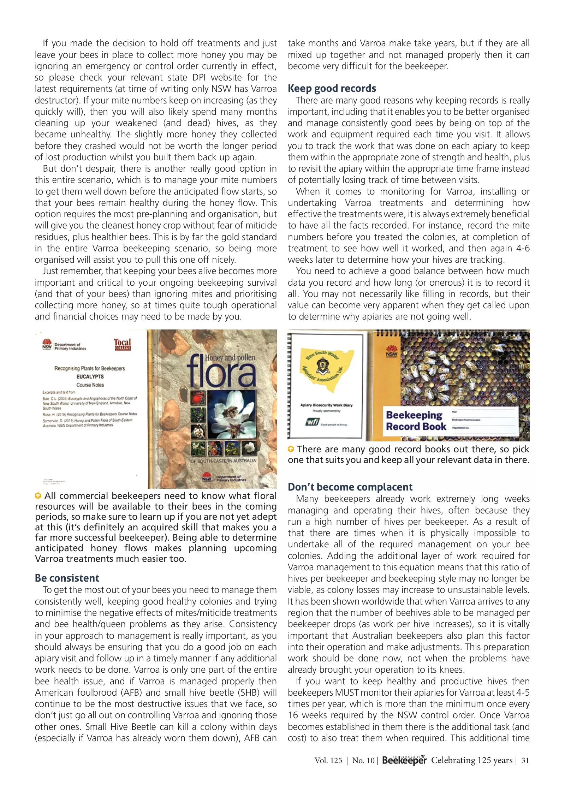

If you made the decision to hold off treatments and just
leave your bees in place to collect more honey you may be
ignoring an emergency or control order currently in effect,
so please check your relevant state DPI website for the
latest requirements (at time of writing only NSW has Varroa
destructor). If your mite numbers keep on increasing (as they
quickly will), then you will also likely spend many months
cleaning up your weakened (and dead) hives, as they
became unhealthy. The slightly more honey they collected
before they crashed would not be worth the longer period
of lost production whilst you built them back up again.
But don’t despair, there is another really good option in
this entire scenario, which is to manage your mite numbers
to get them well down before the anticipated flow starts, so
that your bees remain healthy during the honey flow. This
option requires the most pre-planning and organisation, but
will give you the cleanest honey crop without fear of miticide
residues, plus healthier bees. This is by far the gold standard
in the entire Varroa beekeeping scenario, so being more
organised will assist you to pull this one off nicely.
Just remember, that keeping your bees alive becomes more
important and critical to your ongoing beekeeping survival
(and that of your bees) than ignoring mites and prioritising
collecting more honey, so at times quite tough operational
and financial choices may need to be made by you.
take months and Varroa make take years, but if they are all
mixed up together and not managed properly then it can
become very difficult for the beekeeper.
Keep good records
There are many good reasons why keeping records is really
important, including that it enables you to be better organised
and manage consistently good bees by being on top of the
work and equipment required each time you visit. It allows
you to track the work that was done on each apiary to keep
them within the appropriate zone of strength and health, plus
to revisit the apiary within the appropriate time frame instead
of potentially losing track of time between visits.
When it comes to monitoring for Varroa, installing or
undertaking Varroa treatments and determining how
effective the treatments were, it is always extremely beneficial
to have all the facts recorded. For instance, record the mite
numbers before you treated the colonies, at completion of
treatment to see how well it worked, and then again 4-6
weeks later to determine how your hives are tracking.
You need to achieve a good balance between how much
data you record and how long (or onerous) it is to record it
all. You may not necessarily like filling in records, but their
value can become very apparent when they get called upon
to determine why apiaries are not going well.
Don’t become complacent
Many beekeepers already work extremely long weeks
managing and operating their hives, often because they
run a high number of hives per beekeeper. As a result of
that there are times when it is physically impossible to
undertake all of the required management on your bee
colonies. Adding the additional layer of work required for
Varroa management to this equation means that this ratio of
hives per beekeeper and beekeeping style may no longer be
viable, as colony losses may increase to unsustainable levels.
It has been shown worldwide that when Varroa arrives to any
region that the number of beehives able to be managed per
beekeeper drops (as work per hive increases), so it is vitally
important that Australian beekeepers also plan this factor
into their operation and make adjustments. This preparation
work should be done now, not when the problems have
already brought your operation to its knees.
If you want to keep healthy and productive hives then
beekeepers MUST monitor their apiaries for Varroa at least 4-5
times per year, which is more than the minimum once every
16 weeks required by the NSW control order. Once Varroa
becomes established in them there is the additional task (and
cost) to also treat them when required. This additional time
All commercial beekeepers need to know what floral
resources will be available to their bees in the coming
periods, so make sure to learn up if you are not yet adept
at this (it’s definitely an acquired skill that makes you a
far more successful beekeeper). Being able to determine
anticipated honey flows makes planning upcoming
Varroa treatments much easier too.
There are many good record books out there, so pick
one that suits you and keep all your relevant data in there.
Be consistent
To get the most out of your bees you need to manage them
consistently well, keeping good healthy colonies and trying
to minimise the negative effects of mites/miticide treatments
and bee health/queen problems as they arise. Consistency
in your approach to management is really important, as you
should always be ensuring that you do a good job on each
apiary visit and follow up in a timely manner if any additional
work needs to be done. Varroa is only one part of the entire
bee health issue, and if Varroa is managed properly then
American foulbrood (AFB) and small hive beetle (SHB) will
continue to be the most destructive issues that we face, so
don’t just go all out on controlling Varroa and ignoring those
other ones. Small Hive Beetle can kill a colony within days
(especially if Varroa has already worn them down), AFB can
Vol. 125 | No. 10 |
Celebrating 125 years | 31